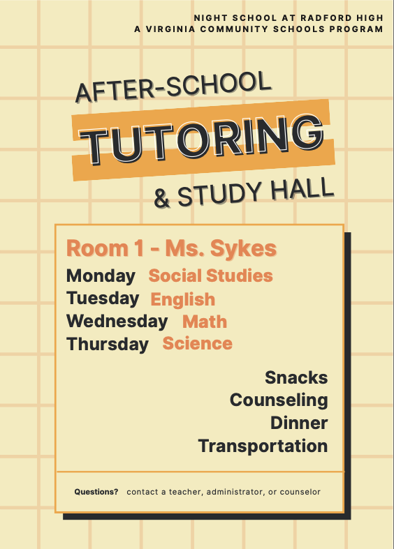
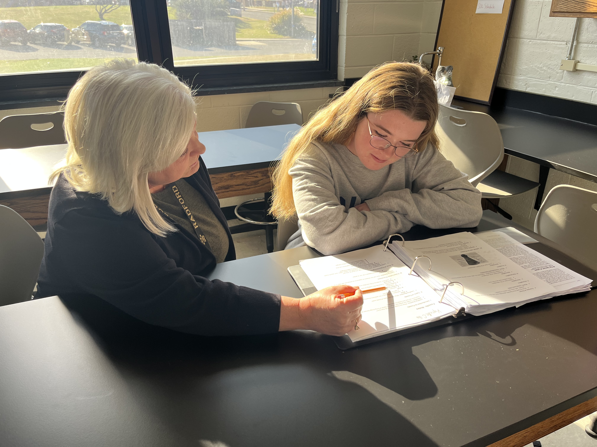

Cohort 1 📍 Region 7
Radford City recognized that students facing chronic absenteeism, suspensions, or homelessness were at risk of falling further behind. The division's answer came through its Community Schools work: after-school programming designed to increase student engagement and help them make up time. The Nighttime Community School (NCS) operates four evenings a week, paying school staff stipends to run the program. It provides subject-area tutoring, meals and snacks, free transportation, and mental health counseling through New River Valley Community Services.
This year, the program expanded to allow students to make up absences. Those who have been late or absent more than seven times are invited to attend evening sessions to restore their eligibility for school-sponsored activities. This new opportunity increased interest in the program, especially in the weeks before the homecoming dance. Thirty-seven students were served through the program during the first quarter, and many return voluntarily throughout the week, averaging more than two hours per session.
"I tend to fall behind when I miss a few days, and I don't get anything done at home. I get behind and overwhelmed, and Night School helps me cut the work load down and make it more digestible. The teachers are very nice, and the environment is very positive."
— Radford City Schools Student

"Night School at Radford High — A Virginia Community Schools Program" operates Monday through Thursday with rotating subjects. The program is made possible by Radford City's partnership with New River Valley Community Services.
"I go to Night School about every day. I use it to either stay ahead of my school work or when I need extra help. I like that there are always different teachers there to help me, and I like that we always have food there."
— Radford City Schools Student

NCS tutor Paige works one-on-one with a student during an evening session. The Nighttime Community School runs four nights a week, and many students build it into their routines, arriving before or after practice and staying more than two hours at a time.
"I go to Night School before or after wrestling practice, depending on the time of practice. I will do that day's work or make up work I'm behind on. Each teacher can help you with different things. Some are good at math, and some are good at helping you get a lot of work done."
— Radford City Schools Student
Nighttime Community School Reach
60% increased attendance • 2.3+ hours per session • 37+ students served first quarter
Radford City exemplifies VCSI Stage 1.1: Generate a Needs Statement. Radford City observed challenges and used their data to create a solution: implement the Community School model.
"One of my clients attended Night School during a suspension, which allowed them to maintain both attendance and academic progress. As a result, the principal reduced the suspension to a lesser offense. This experience highlights how beneficial night school can be in supporting student accountability and success."
— NRVCS School-Based Case Manager
"Night school is a more relaxed setting and I think students feel very comfortable asking and receiving help in a smaller setting where they might not feel that way in a full classroom of peers. I also feel that Night School has become a refuge for some 'regulars' — it's a place to not only get schoolwork completed (with help), but also, and maybe most importantly, to come have a snack and have casual conversations with different teachers and/or a counselor about things other than class work."
— Paige, NCS Tutor